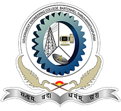
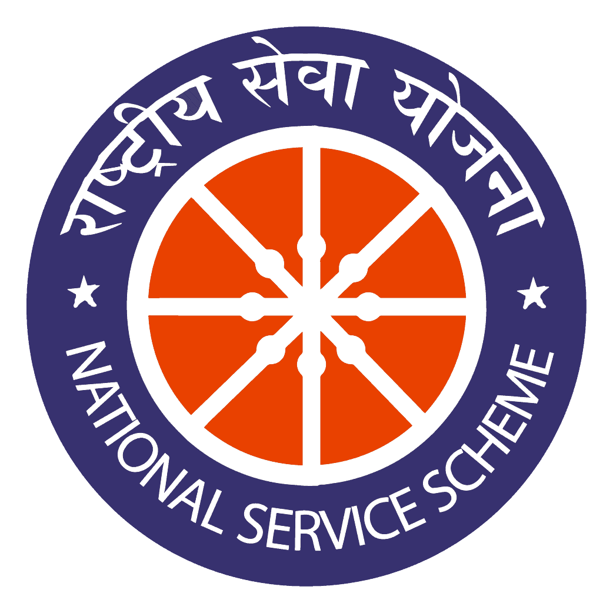

GOVERNMENT ENGINEERING COLLEGE BARTON HILL
NSS UNIT NO. 120

The National Service Scheme is primarily stands for channalising the students youth for building the nation. The youth in all ages has been in the vanguard of progress and social change, thirst for freedom, impatience for quickerpace of progress and a passion for innovation, coupled with idealism and creative fervour, saw the youth in the forefront of the freedom struggle in our own land. If our youth was inspired by the call of the Father of the Nation in the first half of this century, the youth of today faces the challenge of economic development and technological progress with social justice.
Ever since independence there has been growing awareness of the desirability of involving students in National Service. The first Education Commission (1950) recommended the introduction of national service by students on a voluntary basis. Subsequently on the basis of suggestion made by the then Prime Minister pt. Nehru, a committee was appointed under the chairmanship pf Dr. C D Deshmukh to prepare a scheme for compulsory national service by youth in several countries, recommended that national service may be introduced on a voluntary basis. A similar recommendation was made by the Education Commission appointed under the Chairmanship of Dr. D S Kothari.
In April 1967, the Conference of State Education Ministers recommended that at the University stage, students could be permitted to join the national Cadet Corps which was already in existence on a voluntary basis and an alternative to this could be offered to them in the form of a new programme called the National service Scheme (NSS). Promising sportsmen, however, should be exempted from both and allowed to join another scheme called National Sports Organization (NSO), in view of the need to give priority to the development of sports and athletics.
The conference of Vice-Chancellors in September 1967 welcomed this recommendation and suggested that a social committee of Vice Chancellors should be sent up to examine this question in detail. The details were soon worked out and the planning Commission sanctioned on outlay of Rs. 5 crore for developing the NSS during the 4th Five Year Plan as a pilot project in selected institution and universities. In pursuance of these recommendations, the Ministry of Education introduced National Service Scheme during 1969-70. The choice of the timing of its introduction was remarkably auspicious as 1969 was the birth centenary year of Mahatma Gandhi, the father of Nation to whom social service was almost a religion.
The response of students to the scheme has been excellent. Starting with an enrollment of 40,000 students in 1969, the coverage of NSS students has increased every year. Now the strength of NSS is 27% of the total student population in the country.
The scheme now extends to all the states and universities in the country. Students, teachers, parents, guardians, persons in authority in government, universities and colleges and the people in general now realize the need and significance of NSS. It has aroused among the students and youth an awareness of the realities of life, a better understanding and appreciation of the problems of the people. NSS is, thus a concrete attempt in making education relevant to the needs of the society.
Courtesy: www.nsskerala.org